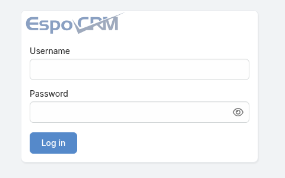
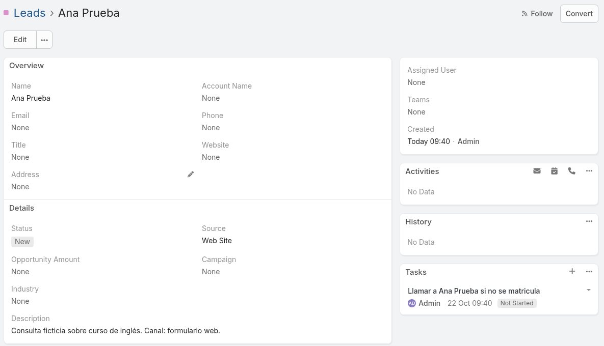
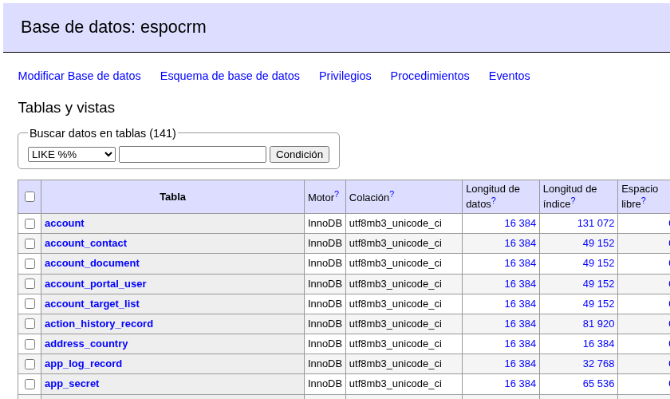

Escenario elegido · academia de idiomas
Un único seguimiento de consultas con EspoCRM
Cuatro profesores. Reciben consultas por web, Instagram y teléfono y pierden el rastro antes de la matrícula.
[Escribe aquí nombre y apellidos]
Exposición: [fecha]
Objetivo general: centralizar las consultas y su evolución hasta la matrícula para conocer cuántas personas pasan de interesadas a alumnas.
Registrar el 100 % de las nuevas consultas con su canal de origen para evitar que queden dispersas.
Actualizar el estado y la próxima llamada de cada interesado para revisar los casos pendientes a los 14 días.
Contar consultas y matrículas por periodo para calcular la tasa de conversión.
Las consultas de web, Instagram y teléfono quedan separadas.
No saben cuántas personas preguntaron ni cuántas se matricularon.
Si alguien no se matricula en dos semanas, nadie retoma el contacto.
Una ficha de interesado con nombre, canal y fecha.
Un estado visible: nuevo, contactado, matriculado o descartado; tareas de seguimiento.
Listado exportable por fecha y estado para calcular consultas, matrículas y conversión.
El escenario no exige automatizar Instagram: se registrarán manualmente las consultas que lleguen por ese canal.
Comparación para cuatro usuarios. [E], [S] y [O] remiten a enlaces oficiales de la última fila.
| Fila | EspoCRM · elegido | SuiteCRM 7 | Odoo Community |
|---|---|---|---|
| Tipo | CRM [E1] | CRM [S1] | ERP modular con CRM [O1] |
| Licencia | AGPLv3: usar, modificar y redistribuir con condiciones de publicación del código [E1] | AGPLv3: usar, modificar y redistribuir con condiciones [S1] | LGPLv3: usar, modificar y redistribuir bajo sus condiciones [O1] |
| Coste / año | 4 usuarios: 0 € licencia; alojamiento y mantenimiento: sin datos [E1] | 4 usuarios: 0 € licencia; alojamiento y mantenimiento: sin datos [S1] | 4 usuarios: 0 € licencia Community; alojamiento y mantenimiento: sin datos [O1] |
| Alojamiento | Servidor propio; nube del fabricante opcional [E1] | Propio o gestionado [S1] | Community en infraestructura propia [O1] |
| Requisitos | Linux con Docker; PHP 8.3–8.5 y MariaDB 10.6+ en la pila [E1,E2] | Linux o Windows; PHP 8.1–8.4 y MySQL/MariaDB [S1] | Linux; Python y PostgreSQL [O2] |
| Funcionalidad | Leads, tareas y CSV; informes y workflows avanzados requieren extensión [E2] | Leads, actividades e informes; más módulos que aprender [S2] | Leads, actividades y análisis; ERP más amplio que lo necesario [O1,O3] |
| Fuente | [E1] espocrm.com/download [E2] espocrm.com/features Imagen: hub.docker.com/_/espocrm | [S1] github.com/SuiteCRM/SuiteCRM [S2] suitecrm.com/what-is-suitecrm | [O1] github.com/odoo/odoo [O2] odoo.com/.../install/source [O3] odoo.com/.../sales/crm |
Los leads permiten guardar en un sitio cada consulta y etiquetar el canal de entrada.
Estado, responsable y tareas ayudan a revisar a quien lleva 14 días sin matricularse.
La exportación CSV permite contar interesados y matrículas por fecha. El informe se calcula fuera del CRM.
Para esta prueba, un CRM ligero y gratuito para cuatro usuarios evita implantar un ERP completo. El seguimiento se plantea manual: no se presupone ninguna extensión de pago.
Fuentes: licencia y alojamiento · leads, tareas, exportación y extensiones.
MariaDB + EspoCRM + Adminer; versiones fijadas en compose.yaml.
.env y volúmenesContraseñas locales y datos persistentes antes del arranque.Imagen pública y ejemplo de Compose: Docker Hub · EspoCRM. Elección comunicada al profesor antes del despliegue.
Capturas reales de la pila local, con datos ficticios.



Tres consultas, una tarea y 141 tablas. Tras reiniciar, los registros seguían disponibles.
La descarga inicial agotó el tiempo de espera. Repetimos docker compose up -d y arrancó.
01 · Registrar: probado. Tres consultas ficticias: web, teléfono e Instagram. La última queda como «Otro» y lleva el canal en la descripción.
02 · Seguir: probado. Ana Prueba tiene una tarea de llamada a 14 días. El seguimiento se hace manualmente.
03 · Medir: parcial. Se cuentan 3 consultas y 0 matrículas de prueba (0 %). Un informe por periodo requiere exportar y calcular fuera del CRM.
Balance: la pila funciona y guarda los datos tras reiniciar; quedan por adaptar el canal Instagram y el informe de conversión.
Uso de IA: se utilizó IA para el diseño y la estructura de las diapositivas. Se ajustó la propuesta al escenario de la academia y a las fuentes citadas.